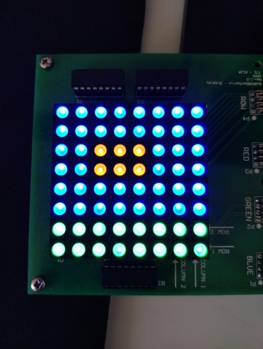

On this page, information is displayed about the alien invasion force in Space Invaders.
Scout
Figure: Picture of Scout UFO enemy on the LED Matrix
The scouts are the initial units sent by the invasion force. They are small and can easily be destroyed, but move quickly. A lone scout is rarely a threat, but in larger numbers they become difficult to handle.
Fighter
Figure: Picture of Fighter UFO enemy on the LED Matrix
The fighters are larger, tougher ships sent to break through Earth's defenses and land on the ground. While they move slower than the scouts, they also require more hits to go down. When destroyed, fighters have a small chance of dropping a piece of enhancing technology able to power up your cannon.
Mothership

Figure: Picture of Mothership UFO enemy on the LED Matrix
Only when most other ships have failed are the motherships sent into the fray. These behemoths are the peak of the invasion force's navy, requiring many hits to pierce the shields and bring it down. Fortunately, it moves even slower than the fighters, so you may yet have a chance. There is a large chance that a piece of enhancing technology is dropped.